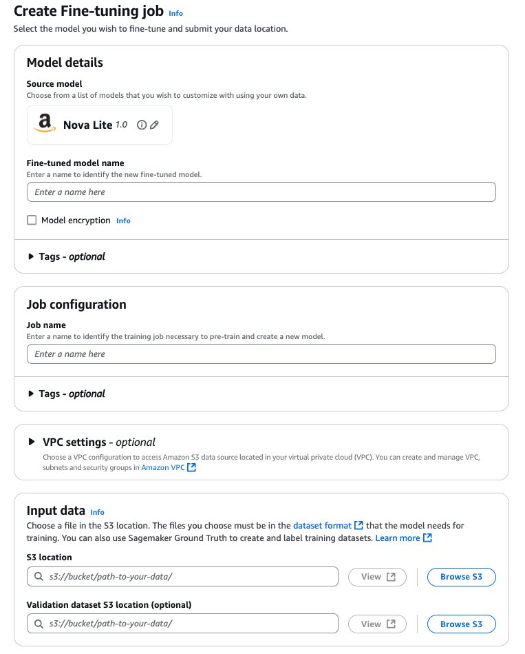
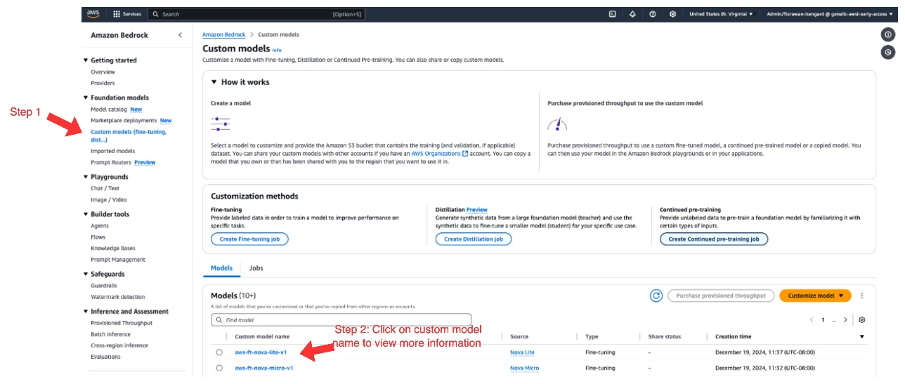
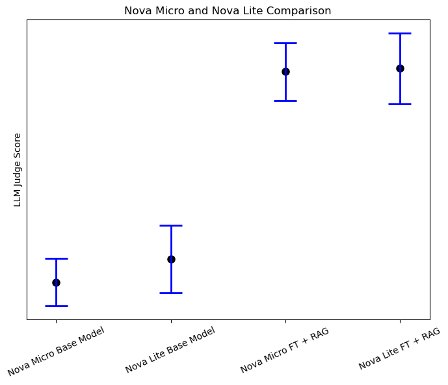
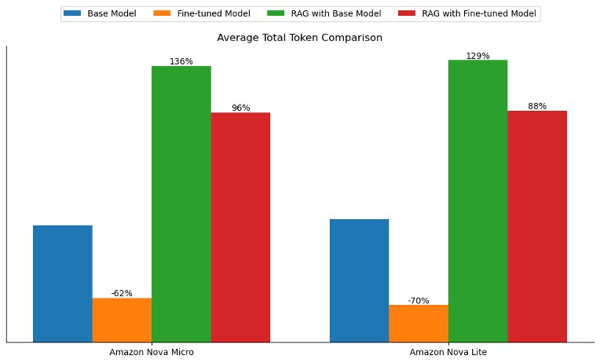

Blog 1
Tùy chỉnh mô hình, RAG, hay cả hai: Nghiên cứu điển hình với Amazon Nova
by Flora Wang, Anila Joshi, Baishali Chaudhury, Sungmin Hong, Jae Oh Woo, and Rahul Ghosh on 10 APR 2025 in Advanced (300), Amazon Bedrock, Amazon Machine Learning, Amazon Nova, Amazon SageMaker, Generative AI, Technical How-to
Khi các doanh nghiệp và nhà phát triển ngày càng tìm cách tối ưu hóa các mô hình ngôn ngữ của họ cho các nhiệm vụ cụ thể, quyết định giữa tùy chỉnh mô hình và Retrieval Augmented Generation (RAG) trở nên quan trọng. Trong bài đăng này, chúng tôi tìm cách giải quyết nhu cầu ngày càng tăng này bằng cách đưa ra các hướng dẫn rõ ràng, có thể hành động và các phương pháp hay nhất về thời điểm sử dụng từng phương pháp, giúp bạn đưa ra quyết định sáng suốt phù hợp với các yêu cầu và mục tiêu riêng của mình.
Sự ra đời của các mô hình Amazon Nova thể hiện một bước tiến đáng kể trong lĩnh vực AI, mang đến những cơ hội mới để tối ưu hóa mô hình ngôn ngữ lớn (LLM). Trong bài đăng này, chúng tôi trình bày cách thực hiện tùy chỉnh mô hình và RAG một cách hiệu quả với các mô hình Amazon Nova làm cơ sở. Chúng tôi đã tiến hành nghiên cứu so sánh toàn diện giữa tùy chỉnh mô hình và RAG bằng cách sử dụng các mô hình Amazon Nova mới nhất và chia sẻ những thông tin chi tiết có giá trị này.
Tổng quan về cách tiếp cận và mô hình cơ sở
Trong phần này, chúng tôi thảo luận về sự khác biệt giữa phương pháp tinh chỉnh và RAG, trình bày các trường hợp sử dụng phổ biến cho từng cách tiếp cận và cung cấp tổng quan về mô hình cơ sở được sử dụng cho các thử nghiệm.
Làm sáng tỏ RAG và tùy chỉnh mô hình
RAG là một kỹ thuật để nâng cao khả năng của các mô hình được đào tạo trước bằng cách cho phép mô hình truy cập vào các nguồn dữ liệu miền cụ thể bên ngoài. Nó kết hợp hai thành phần: truy xuất kiến thức bên ngoài và tạo phản hồi. Nó cho phép các mô hình ngôn ngữ được đào tạo trước kết hợp động dữ liệu bên ngoài trong quá trình tạo phản hồi, cho phép kết quả đầu ra được cập nhật và chính xác hơn theo ngữ cảnh. Không giống như tinh chỉnh, trong RAG, mô hình không trải qua bất kỳ khóa đào tạo nào và trọng số mô hình không được cập nhật để tìm hiểu kiến thức miền. Mặc dù tinh chỉnh ngầm sử dụng thông tin miền cụ thể bằng cách nhúng kiến thức cần thiết trực tiếp vào mô hình, RAG sử dụng rõ ràng thông tin miền cụ thể thông qua truy xuất bên ngoài.
Tùy chỉnh mô hình đề cập đến việc điều chỉnh mô hình ngôn ngữ được đào tạo trước để phù hợp hơn với các tác vụ, miền hoặc tập dữ liệu cụ thể. Tinh chỉnh là một trong những kỹ thuật như vậy, giúp đưa kiến thức cụ thể về nhiệm vụ hoặc lĩnh vực cụ thể để cải thiện hiệu suất mô hình. Nó điều chỉnh các thông số của mô hình để phù hợp hơn với các sắc thái của nhiệm vụ mục tiêu trong khi sử dụng kiến thức chung của nó.
Các trường hợp sử dụng phổ biến cho từng cách tiếp cận
RAG tối ưu cho các trường hợp sử dụng yêu cầu dữ liệu động hoặc cập nhật thường xuyên (chẳng hạn như Câu hỏi thường gặp về hỗ trợ khách hàng và danh mục thương mại điện tử), thông tin chi tiết về miền cụ thể (chẳng hạn như Hỏi & Đáp pháp lý hoặc y tế), các giải pháp có thể mở rộng cho các ứng dụng rộng (chẳng hạn như nền tảng phần mềm dưới dạng dịch vụ (SaaS)), truy xuất dữ liệu đa phương thức (chẳng hạn như tóm tắt tài liệu) và tuân thủ nghiêm ngặt dữ liệu an toàn hoặc nhạy cảm (chẳng hạn như hệ thống tài chính và quy định).
Ngược lại, tinh chỉnh phát triển mạnh trong các tình huống yêu cầu tùy chỉnh chính xác (chẳng hạn như chatbot được cá nhân hóa hoặc viết sáng tạo), độ chính xác cao cho các tác vụ hẹp (chẳng hạn như tạo mã hoặc tóm tắt chuyên biệt), độ trễ cực thấp (chẳng hạn như tương tác với khách hàng theo thời gian thực), ổn định với bộ dữ liệu tĩnh (chẳng hạn như bảng thuật ngữ dành riêng cho miền) và mở rộng quy mô hiệu quả về chi phí cho các tác vụ khối lượng lớn (chẳng hạn như tự động hóa trung tâm cuộc gọi).
Mặc dù RAG vượt trội về nền tảng thời gian thực trong dữ liệu bên ngoài và tinh chỉnh chuyên về quy trình làm việc tĩnh, có cấu trúc và được cá nhân hóa, nhưng việc lựa chọn giữa chúng thường phụ thuộc vào các yếu tố sắc thái. Bài đăng này cung cấp so sánh toàn diện về RAG và tinh chỉnh, làm rõ điểm mạnh, hạn chế và bối cảnh của chúng mà mỗi cách tiếp cận mang lại hiệu suất tốt nhất.
Giới thiệu về các mẫu Amazon Nova
Amazon Nova là một thế hệ mô hình nền tảng (FM) mới cung cấp thông tin tiên tiến và hiệu suất giá hàng đầu trong ngành. Amazon Nova Pro và Amazon Nova Lite là những mô hình đa phương thức vượt trội về độ chính xác và tốc độ, với Amazon Nova Lite được tối ưu hóa để xử lý nhanh và chi phí thấp. Amazon Nova Micro tập trung vào các tác vụ văn bản có độ trễ cực thấp. Chúng cung cấp khả năng suy luận nhanh, hỗ trợ quy trình làm việc tác nhân với Cơ sở tri thức Amazon Bedrock và RAG, đồng thời cho phép tinh chỉnh dữ liệu văn bản và đa phương thức. Được tối ưu hóa để có hiệu suất hiệu quả về chi phí, chúng được đào tạo trên dữ liệu bằng hơn 200 ngôn ngữ.
Tổng quan về giải pháp
Để đánh giá hiệu quả của RAG so với tùy chỉnh mô hình, chúng tôi đã thiết kế một khung thử nghiệm toàn diện bằng cách sử dụng một tập hợp các câu hỏi dành riêng cho AWS. Nghiên cứu của chúng tôi đã sử dụng Amazon Nova Micro và Amazon Nova Lite làm FM cơ bản và kiểm tra hiệu suất của chúng trên các cấu hình khác nhau.
Chúng tôi đã cấu trúc đánh giá của mình như sau:
-
Mô hình cơ sở:
-
Amazon Nova Micro và Amazon Nova Lite đã qua sử dụng
-
Câu trả lời được tạo cho các câu hỏi dành riêng cho AWS mà không cần ngữ cảnh bổ sung
-
-
Mô hình cơ sở với RAG:
-
Kết nối các mô hình cơ sở với Cơ sở tri thức Amazon Bedrock
-
Được cung cấp quyền truy cập vào tài liệu và blog có liên quan của AWS
-
-
Tùy chỉnh mô hình:
-
Tinh chỉnh cả hai mô hình Amazon Nova bằng cách sử dụng 1.000 cặp câu hỏi-câu trả lời dành riêng cho AWS được tạo từ cùng một bộ bài viết AWS
-
Triển khai các mô hình tùy chỉnh thông qua thông lượng được cung cấp
-
Tạo câu trả lời cho các câu hỏi dành riêng cho AWS với các mô hình được tinh chỉnh
-
-
Tùy chỉnh mô hình và cách tiếp cận kết hợp RAG:
-
Kết nối các mô hình tinh chỉnh với Cơ sở tri thức Amazon Bedrock
-
Cung cấp các mô hình tinh chỉnh quyền truy cập vào các bài viết AWS có liên quan tại thời điểm suy luận
-
Trong các phần sau, chúng ta sẽ hướng dẫn cách thiết lập phương pháp tiếp cận thứ hai và thứ ba (mô hình cơ sở với RAG và tùy chỉnh mô hình với tinh chỉnh) trong Amazon Bedrock.
Điều kiện tiên quyết
Để làm theo bài đăng này, bạn cần các điều kiện tiên quyết sau:
-
Tài khoản AWS và các quyền thích hợp
-
Vùng lưu trữ Amazon Simple Storage Service (Amazon S3) với hai thư mục: một thư mục chứa dữ liệu đào tạo của bạn và một thư mục cho đầu ra mô hình và chỉ số đào tạo của bạn
Triển khai RAG với mô hình Amazon Nova cơ bản
Trong phần này, chúng ta sẽ hướng dẫn các bước để triển khai RAG với mô hình cơ sở. Để làm như vậy, chúng tôi tạo ra một cơ sở tri thức. Hoàn thành các bước sau:
-
Trên bảng điều khiển Amazon Bedrock, chọn Cơ sở kiến thức trong ngăn điều hướng.
-
Trong Cơ sở kiến thức, chọn Tạo.

-
Trên trang Đặt cấu hình nguồn dữ liệu, hãy cung cấp thông tin sau:
-
Chỉ định vị trí Amazon S3 của tài liệu.
-
Chỉ định chiến lược phân đoạn.
-
-
Chọn Tiếp theo.

-
Trên trang Chọn mô hình nhúng và đặt cấu hình kho vectơ, hãy cung cấp thông tin sau:
-
Trong phần Mô hình nhúng, chọn mô hình nhúng được sử dụng để nhúng các khối.
-
Trong phần Cơ sở dữ liệu vectơ, hãy tạo một kho lưu trữ vectơ mới hoặc sử dụng kho lưu trữ vectơ hiện có, nơi các phần nhúng sẽ được lưu trữ để truy xuất.
-
-
Chọn Tiếp theo.

- Trên trang Xem lại và tạo, xem lại cài đặt và chọn Tạo cơ sở kiến thức.

Tinh chỉnh mô hình Amazon Nova bằng API Amazon Bedrock
Trong phần này, chúng tôi cung cấp hướng dẫn chi tiết về cách tinh chỉnh và lưu trữ các mô hình Amazon Nova tùy chỉnh bằng Amazon Bedrock. Sơ đồ sau đây minh họa kiến trúc giải pháp.

Tạo công việc tinh chỉnh
Tinh chỉnh các mô hình Amazon Nova thông qua API Amazon Bedrock là một quy trình được sắp xếp hợp lý:
-
Trên bảng điều khiển Amazon Bedrock, chọn us-east-1 làm Khu vực AWS của bạn.Tại thời điểm viết bài, tinh chỉnh mô hình Amazon Nova chỉ có sẵn ở us-east-1.
-
Chọn Mô hình tùy chỉnh trong Mô hình nền tảng trong ngăn điều hướng.
-
Trong Phương pháp tùy chỉnh, chọn Tạo công việc tinh chỉnh.

-
Đối với Mô hình nguồn, chọn Chọn mô hình.
-
Chọn Amazon làm nhà cung cấp và mô hình Amazon Nova mà bạn chọn.
-
Chọn Áp dụng.

-
Đối với Tên kiểu máy được tinh chỉnh, hãy nhập tên duy nhất cho kiểu máy được tinh chỉnh.
-
Đối với Tên công việc, nhập tên cho công việc tinh chỉnh.
-
Trong Dữ liệu đầu vào, nhập vị trí của vùng lưu trữ S3 nguồn (dữ liệu đào tạo) và vùng lưu trữ S3 đích (đầu ra mô hình và chỉ số đào tạo) và tùy chọn vị trí của tập dữ liệu xác thực của bạn.

Định cấu hình siêu tham số
Đối với các mô hình Amazon Nova, bạn có thể tùy chỉnh các siêu tham số sau:
| Thông số | Phạm vi/Ràng buộc |
|---|---|
| Kỷ nguyên | 1–5 |
| Kích thước lô | Cố định ở mức 1 |
| Tốc độ học tập | 0.000001–0.0001 |
| Các bước khởi động tốc độ học tập | 0–100 |
Chuẩn bị tập dữ liệu để tương thích với các mô hình Amazon Nova
Tương tự như các LLM khác, Amazon Nova yêu cầu các cặp hoàn thành lời nhắc, còn được gọi là cặp câu hỏi và câu trả lời (Q&A), để tinh chỉnh có giám sát (SFT). Tập dữ liệu này phải chứa các kết quả lý tưởng mà bạn muốn mô hình ngôn ngữ tạo ra cho các tác vụ hoặc lời nhắc cụ thể. Tham khảo Hướng dẫn chuẩn bị dữ liệu của bạn cho Amazon Nova về các phương pháp thực hành tốt nhất và định dạng ví dụ khi chuẩn bị bộ dữ liệu để tinh chỉnh các mô hình Amazon Nova.
Kiểm tra tinh chỉnh tình trạng công việc và hiện vật đào tạo
Sau khi bạn tạo công việc tinh chỉnh, hãy chọn Mô hình tùy chỉnh trong Mô hình nền tảng trong ngăn điều hướng. Bạn sẽ tìm thấy công việc tinh chỉnh hiện tại được liệt kê trong Công việc. Bạn có thể sử dụng trang này để theo dõi trạng thái công việc tinh chỉnh của mình.

Khi trạng thái công việc tinh chỉnh của bạn thay đổi thành Hoàn thành, bạn có thể chọn tên công việc và điều hướng đến trang Tổng quan về công việc đào tạo. Bạn sẽ tìm thấy các thông tin sau:
-
Thông số kỹ thuật công việc đào tạo
-
Vị trí Amazon S3 cho dữ liệu đầu vào được sử dụng để tinh chỉnh
-
Siêu tham số được sử dụng trong quá trình tinh chỉnh
-
Vị trí Amazon S3 cho đầu ra đào tạo

Lưu trữ mô hình tinh chỉnh với thông lượng được cung cấp
Sau khi công việc tinh chỉnh hoàn tất thành công, bạn có thể truy cập mô hình tùy chỉnh của mình thông qua các bước sau:
-
Trên bảng điều khiển Amazon Bedrock, chọn Mô hình tùy chỉnh trong Mô hình nền tảng trong ngăn điều hướng.
-
Trong Mô hình, chọn mô hình tùy chỉnh của bạn.

Trang chi tiết kiểu máy hiển thị các thông tin sau:
-
Chi tiết mô hình được tinh chỉnh
-
Vị trí Amazon S3 cho dữ liệu đầu vào được sử dụng để tinh chỉnh
-
Siêu tham số được sử dụng trong quá trình tinh chỉnh
-
Vị trí Amazon S3 cho đầu ra đào tạo

-
Để cung cấp mô hình tinh chỉnh của bạn để suy luận, hãy chọn Mua thông lượng được cung cấp.
-
Chọn thời hạn cam kết (không cam kết, 1 tháng hoặc 6 tháng) và xem lại chi phí liên quan để lưu trữ các mô hình được tinh chỉnh.
Sau khi mô hình tùy chỉnh được lưu trữ thông qua thông lượng được cung cấp, ID mô hình sẽ được gán và có thể được sử dụng để suy luận.
Các bước tinh chỉnh và suy luận nói trên cũng có thể được thực hiện theo chương trình. Để biết thêm thông tin, hãy tham khảo kho lưu trữ GitHub sau đây, trong đó chứa mã mẫu.
Khung đánh giá và kết quả
Trong phần này, trước tiên chúng tôi giới thiệu khung đánh giá nhiều thẩm phán LLM của chúng tôi, được thiết lập để giảm thiểu sự thiên vị của từng giám khảo LLM. Sau đó, chúng tôi so sánh RAG và kết quả tinh chỉnh về chất lượng phản hồi cũng như độ trễ và ý nghĩa của token.
Nhiều LLM làm thẩm phán để giảm thiểu thành kiến
Sơ đồ sau đây minh họa quy trình làm việc của chúng tôi bằng cách sử dụng nhiều LLM làm giám khảo.

Sử dụng LLM làm giám khảo đã trở thành một cách tiếp cận ngày càng phổ biến để đánh giá các nhiệm vụ khó đánh giá thông qua các phương pháp truyền thống hoặc đánh giá của con người. Đối với khung đánh giá của mình, chúng tôi đã xây dựng 10 câu hỏi kiểm tra theo lĩnh vực cụ thể bao gồm các khía cạnh chính của các dịch vụ và tính năng AWS, được thiết kế để kiểm tra cả độ chính xác thực tế và chiều sâu hiểu biết. Mỗi câu trả lời do mô hình tạo ra được đánh giá bằng cách sử dụng hệ thống tính điểm tiêu chuẩn trên thang điểm 0–10, trong đó 0–3 biểu thị thông tin không chính xác hoặc gây hiểu lầm, 4–6 đại diện cho câu trả lời đúng một phần nhưng không đầy đủ, 7–8 biểu thị hầu hết đúng với những điểm không chính xác nhỏ và 9–10 biểu thị hoàn toàn chính xác với lời giải thích toàn diện.
Chúng tôi sử dụng lời nhắc đánh giá thẩm phán LLM sau:
{
"system\_prompt": "You are a helpful assistant.",
"prompt\_template": "\[Instruction\] Please act as an impartial judge and evaluate the quality of the response provided by an AI assistant to the user question displayed below. Your evaluation should consider factors such as the helpfulness, relevance, accuracy, depth, creativity, and level of detail of the response. Begin your evaluation by providing a short explanation. Be as objective as possible. After providing your explanation, you must rate the response on a scale of 1 to 10 by strictly following this format: \\"\[\[rating\]\]\\", for example: \\"Rating: \[\[5\]\]\\".\\n\\n\[Question\]\\n{question}\\n\\n\[The Start of Assistant's Answer\]\\n{answer}\\n\[The End of Assistant's Answer\]",
"description": "Prompt for general questions",
"category": "general",
"output\_format": "\[\[rating\]\]"
}
Chúng tôi sử dụng câu hỏi đánh giá mẫu sau đây và sự thật cơ bản:
{
"question\_id": 9161,
"category": "AWS",
"turns": \[
" \\"What specific details are collected and sent to AWS when anonymous operational metrics are enabled for an Amazon EFS file system?",
"What's required for a successful AWS CloudFormation launch?"
\],
"reference": \[
"When anonymous operational metrics are enabled for an Amazon EFS file system, the following specific details are collected and sent to AWS: Solution ID, Unique ID, Timestamp, Backup ID, Backup Start Time, Backup Stop Time, Backup Window, Source EFS Size, Destination EFS Size, Instance Type, Retain, S3 Bucket Size, Source Burst Credit Balance, Source Burst Credit Balance Post Backup, Source Performance Mode, Destination Performance Mode, Number of Files, Number of Files Transferred, Total File Size, Total Transferred File Size, Region, Create Hard Links Start Time, Create Hard Links Stop Time, Remove Snapshot Start Time, Remove Snapshot Stop Time, Rsync Delete Start Time, Rsync Delete Stop Time.",
"For a successful AWS CloudFormation launch, you need to sign in to the AWS Management Console, choose the correct AWS Region, use the button to launch the template, verify the correct template URL, assign a name to your solution stack, review and modify the parameters as necessary, review and confirm the settings, check the boxes acknowledging that the template creates AWS Identity and Access Management resources and may require an AWS CloudFormation capability, and choose Create stack to deploy the stack. You should receive a CREATE\_COMPLETE status in approximately 15 minutes."
\]
}
Để giảm thiểu những thành kiến nội tại tiềm ẩn giữa các giám khảo LLM khác nhau, chúng tôi đã sử dụng hai giám khảo LLM để đánh giá các phản hồi do mô hình tạo ra: Claude Sonnet 3.5 của Anthropic và Llama 3.1 70B của Meta. Mỗi giám khảo được cung cấp câu hỏi kiểm tra ban đầu, câu trả lời do mô hình tạo ra và các tiêu chí chấm điểm cụ thể tập trung vào độ chính xác, đầy đủ, liên quan và rõ ràng thực tế. Nhìn chung, chúng tôi quan sát thấy mức độ tương quan xếp hạng cao giữa các giám khảo LLM trong việc đánh giá các cách tiếp cận khác nhau, với các mô hình đánh giá nhất quán trên tất cả các trường hợp thử nghiệm.
So sánh chất lượng phản hồi
Cả tinh chỉnh và RAG đều cải thiện đáng kể chất lượng câu trả lời được tạo cho các câu hỏi dành riêng cho AWS so với mô hình cơ sở. Sử dụng Amazon Nova Lite làm mô hình cơ sở, chúng tôi quan sát thấy rằng cả tinh chỉnh và RAG đều cải thiện 30% điểm trung bình của giám khảo LLM về chất lượng phản hồi, trong khi kết hợp tinh chỉnh với RAG đã cải thiện tổng cộng 83% chất lượng phản hồi, như thể hiện trong hình sau.

Đáng chú ý, đánh giá của chúng tôi đã tiết lộ một phát hiện thú vị (như thể hiện trong hình sau): khi kết hợp các phương pháp tinh chỉnh và RAG, các mô hình nhỏ hơn như Amazon Nova Micro cho thấy những cải thiện đáng kể về hiệu suất trong các tác vụ theo miền cụ thể, gần như phù hợp với hiệu suất của các mô hình lớn hơn. Điều này cho thấy rằng đối với các trường hợp sử dụng chuyên biệt với phạm vi được xác định rõ ràng, sử dụng các mô hình nhỏ hơn với cả tinh chỉnh và RAG có thể là một giải pháp hiệu quả hơn về chi phí so với việc triển khai các mô hình lớn hơn.

Độ trễ và ý nghĩa của token
Ngoài việc nâng cao chất lượng phản hồi, cả tinh chỉnh và RAG đều giúp giảm độ trễ tạo phản hồi so với mô hình cơ sở. Đối với cả Amazon Nova Micro và Amazon Nova Lite, tinh chỉnh đã giảm độ trễ của mô hình cơ sở khoảng 50%, trong khi RAG giảm khoảng 30%, như thể hiện trong hình sau.

Tinh chỉnh cũng thể hiện lợi thế độc đáo của việc cải thiện giọng điệu và phong cách của các câu trả lời được tạo để phù hợp hơn với dữ liệu đào tạo. Trong các thử nghiệm của chúng tôi, tổng số token trung bình (token đầu vào và đầu ra) giảm hơn 60% với cả hai mô hình được tinh chỉnh. Tuy nhiên, tổng số token trung bình tăng hơn gấp đôi với cách tiếp cận RAG do chuyển ngữ cảnh, như thể hiện trong hình sau. Phát hiện này cho thấy rằng đối với các trường hợp sử dụng nhạy cảm với độ trễ hoặc khi mục tiêu là điều chỉnh phản hồi của mô hình theo giọng điệu, phong cách hoặc giọng nói thương hiệu cụ thể, tùy chỉnh mô hình có thể mang lại nhiều giá trị kinh doanh hơn.

Kết thúc
Trong bài đăng này, chúng tôi đã so sánh tùy chỉnh mô hình (tinh chỉnh) và RAG cho các tác vụ theo miền cụ thể với Amazon Nova. Trước tiên, chúng tôi cung cấp hướng dẫn chi tiết về cách tinh chỉnh, lưu trữ và tiến hành suy luận với Amazon Nova tùy chỉnh thông qua API Amazon Bedrock. Sau đó, chúng tôi áp dụng phương pháp LLM-as-a-judge để đánh giá chất lượng phản hồi từ các cách tiếp cận khác nhau. Ngoài ra, chúng tôi đã kiểm tra độ trễ và ý nghĩa mã thông báo của các thiết lập khác nhau.
Cả tinh chỉnh và RAG đều cải thiện hiệu suất của mô hình. Tùy thuộc vào nhiệm vụ và tiêu chí đánh giá, tùy chỉnh mô hình cho thấy hiệu suất tương tự hoặc đôi khi tốt hơn so với RAG. Tùy chỉnh mô hình cũng có thể hữu ích để cải thiện phong cách và giọng điệu của câu trả lời được tạo. Trong thử nghiệm này, phản hồi của mô hình tùy chỉnh tuân theo kiểu câu trả lời ngắn gọn của dữ liệu đào tạo đã cho, dẫn đến độ trễ thấp hơn so với đối tác cơ sở. Ngoài ra, tùy chỉnh mô hình cũng có thể được sử dụng cho nhiều trường hợp sử dụng mà RAG không đơn giản để sử dụng, chẳng hạn như gọi công cụ, phân tích cảm xúc, trích xuất thực thể, v.v. Nhìn chung, chúng tôi khuyên bạn nên kết hợp tùy chỉnh mô hình và RAG để trả lời câu hỏi hoặc các tác vụ tương tự để tối đa hóa hiệu suất.
Để biết thêm thông tin về Amazon Bedrock và các mẫu Amazon Nova mới nhất, hãy tham khảo Hướng dẫn sử dụng Amazon Bedrock và Hướng dẫn sử dụng Amazon Nova. Trung tâm đổi mới AI tổng quát AWS có một nhóm các chuyên gia khoa học và chiến lược AWS có chuyên môn toàn diện trong hành trình AI tổng quát, giúp khách hàng ưu tiên các trường hợp sử dụng, xây dựng lộ trình và đưa các giải pháp vào sản xuất. Hãy xem Trung tâm Đổi mới AI Tổng quát để biết những câu chuyện thành công mới nhất của chúng tôi về công việc và khách hàng.
Giới thiệu về các tác giả
| Ảnh đại diện | Giới thiệu về các tác giả |
|---|---|
 |
Mengdie (Flora) Wang là Nhà khoa học dữ liệu tại Trung tâm đổi mới AI tổng quát AWS, nơi cô làm việc với khách hàng để kiến trúc và triển khai các giải pháp AI tổng quát có thể mở rộng nhằm giải quyết những thách thức kinh doanh riêng của họ. Cô chuyên về các kỹ thuật tùy chỉnh mô hình và hệ thống AI dựa trên tác nhân, giúp các tổ chức khai thác toàn bộ tiềm năng của công nghệ AI tổng quát. Trước khi gia nhập AWS, Flora lấy bằng Thạc sĩ Khoa học Máy tính tại Đại học Minnesota, nơi cô phát triển chuyên môn về máy học và trí tuệ nhân tạo. |
 |
Sungmin Hong là Nhà khoa học ứng dụng cấp cao tại Trung tâm đổi mới AI tổng quát của Amazon, nơi ông giúp đẩy nhanh sự đa dạng của các trường hợp sử dụng của khách hàng AWS. Trước khi gia nhập Amazon, Sungmin là nghiên cứu sinh sau tiến sĩ tại Trường Y Harvard. Ông có bằng Tiến sĩ Khoa học Máy tính tại Đại học New York. Ngoài công việc, anh ấy tự hào về việc giữ cho cây trồng trong nhà của mình tồn tại trong 3+ năm. |
| Jae Oh Woo là Nhà khoa học ứng dụng cấp cao tại Trung tâm đổi mới AI tổng quát AWS, nơi anh chuyên phát triển các giải pháp tùy chỉnh và tùy chỉnh mô hình cho nhiều trường hợp sử dụng khác nhau. Ông có niềm đam mê mãnh liệt đối với nghiên cứu liên ngành kết nối nền tảng lý thuyết với các ứng dụng thực tế trong lĩnh vực AI tổng quát đang phát triển nhanh chóng. Trước khi gia nhập Amazon, Jae Oh là nghiên cứu sinh sau tiến sĩ Simons tại Đại học Texas ở Austin, nơi ông tiến hành nghiên cứu trên các khoa Toán học và Kỹ thuật Điện và Máy tính. Ông có bằng Tiến sĩ về Toán ứng dụng tại Đại học Yale. | |
 |
Rahul Ghosh là Nhà khoa học ứng dụng tại Trung tâm đổi mới AI tổng quát của Amazon, nơi ông làm việc với khách hàng AWS trên các ngành dọc khác nhau để đẩy nhanh việc sử dụng AI tổng quát. Rahul có bằng Tiến sĩ Khoa học Máy tính tại Đại học Minnesota. |
 |
Baishali Chaudhury là Nhà khoa học ứng dụng tại Trung tâm Đổi mới AI Tổng quát tại AWS, nơi cô tập trung vào việc thúc đẩy các giải pháp AI tổng quát cho các ứng dụng trong thế giới thực. Cô có nền tảng vững chắc về thị giác máy tính, học máy và AI cho chăm sóc sức khỏe. Baishali có bằng Tiến sĩ Khoa học Máy tính của Đại học Nam Florida và PostDoc của Trung tâm Ung thư Moffitt. |
 |
Anila Joshi có hơn một thập kỷ kinh nghiệm xây dựng các giải pháp AI. Với tư cách là Nhà lãnh đạo địa lý AWSI tại Trung tâm đổi mới AI tổng quát AWS, Anila đi tiên phong trong các ứng dụng sáng tạo của AI nhằm vượt qua ranh giới khả năng và đẩy nhanh việc áp dụng các dịch vụ AWS với khách hàng bằng cách giúp khách hàng lên ý tưởng, xác định và triển khai các giải pháp AI tổng quát bảo mật. |